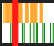

Aide
|
Double tap :
- A gauche de l'écran : Revient au plan précédent.
Sinon, Play/pause partout.- A droit de l'écran : Va au plan suivant. - Au centre : Play/Pause. |
|  |
Hold : |
|
Pinch : |

|
Drag : |
|
Tap : |
|  |
Timeline : |